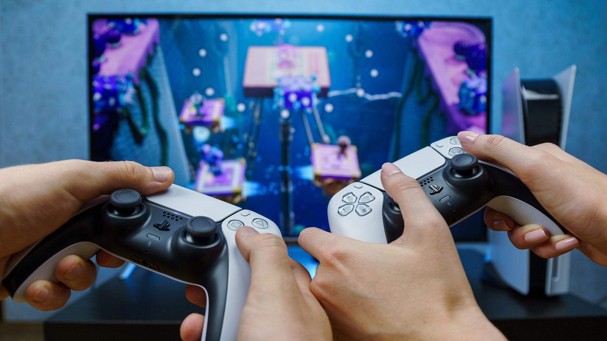

MIS PASATIEMPOS
Videojuegos
Me gusta jugar videojuegos de preferencia que tengan modos copetitivo ya que siempre me ha gustado que haya algo por lo que buscar ganar.
Siento que los videojuegos son en gran parte una buena manera de distraccion y te ayudan aveces a pensar(dependiendo lo que juegues), pero aun asi no hay que perderse en ellos por que pueden llegar a ser una gran perdida de tiempo.

Tocar guitarra
Toco guitarra desde hace poco mas de 1 año y a decir verdad es muy divertido al menos para mi, si es verdad que aveces me la paso repitiendo la misma cancion siempre pero intento aprender nuevas cada que puedo.
La guitarra puede ser un buen pasatiempo como cualquier otro instrumento, si es verdad que al principio puede ser algo tedioso y puede ser que te llegues a frustrar por que no te sale lo que quieres hacer, pero es como cualquier otro instrumento o cualquier otra cosa que quieras aprender,es solo practica constante y tanto tu cuerpo(manos) y mente se van a ir adaptando a hacer con normalidad lo que antes te costaba.
Anime
No hace mucho que empece a ver anime pero desde que empece le agarre el gusto es algo diferente a lo que estas acostumbrado y si le buscas siempre vas a encontrar algo que te guste.
El anime asi como otros pasatiempos no es ni malo ni bueno, es algo en lo que te puedes distraer viendo historias que te gusten pero al igual que los otros hay que tener cuidado por que quita mucho tiempo.
Programar
Empece a programar un poco antes de entrar a la carrera y la verdad si me gusto, al entrar no se me dificultaron las materias por la poca experiencia que tenia eso me ayudo a agarrarle un poco mas el gusto, despues baje un poco el ritmo pero actualmente me gusta y lo practico.
La porgramacion es un buen pasatiempo ya que realmente es interesante pensar la manera en que puedes solucionar algo y el como lo haces es algo que siempre me ha gustado, ademas de que obviamente aprender a programar bien te puede traer beneficios economicos a futuro.